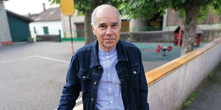

Gironde
"Il n'y aura ni classe, ni cantine"
Daniel Fénelon, maire de Belvès-de-Castillon, dans le Libournais. PHOTO JEAN-CHARLES GALIACY
Belvès-de-Castillon - Reportage dans le village girondin où le maire juge le contexte sanitaire trop risqué
Dans le Libournais, à Belvès-de-Castillon qui compte autour de 350 habitants, le maire Daniel Fénelon ne cache pas un certain ressentiment contre le gouvernement, estimant se retrouverbien seul au coeur de cette tempête sanitaire. " Il n'y aura pas classe, ni cantine ici. Si nous y sommes forcés, ils se débrouilleront (...) Quelque part, on (l'État, NDLR) donne la responsabilité des écoles primaires au maire et au directeur d'école ", soupire l'élu qui s'est présenté sous les couleurs du PS en 2014.
L'école de Belvès, qui compte une trentaine d'élèves et deux classes (CP et CP-CE1), est associée à celles de trois autres communes au sein d'un RPI : Saint-Genès-de-Castillon, Sainte-Colombe et Gardegan-et-Tourtirac. Daniel Fénelon est le seul à s'être affiché ouvertement contre l'ouverture de l'école. Son choix fait débat. À la mairie, au sein de laquelle on l'a retrouvé hier matin, les discussions portent forcément sur le sujet. Catherine Baron, la secrétaire de mairie, également élue à Saint-Genès-de-Castillon, estime qu'il faut au contraire reprendre " la classe ".